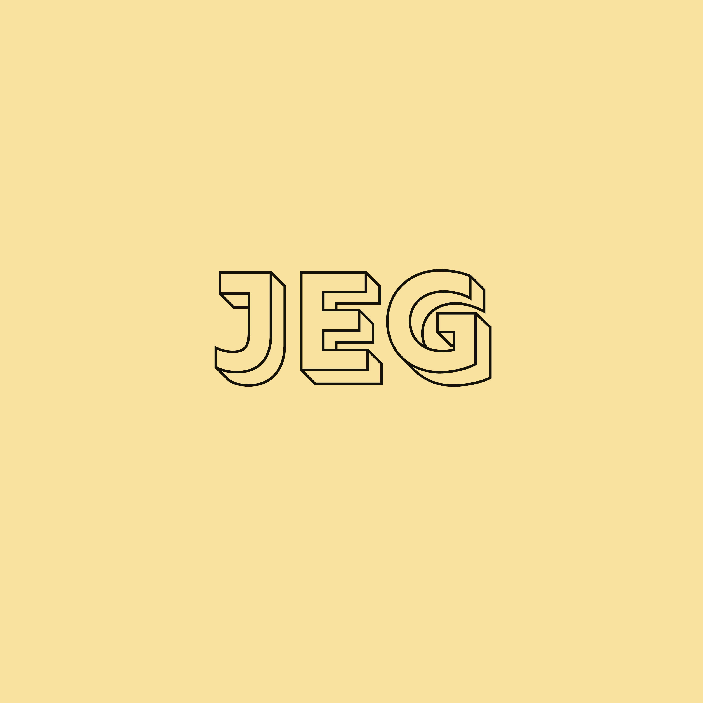
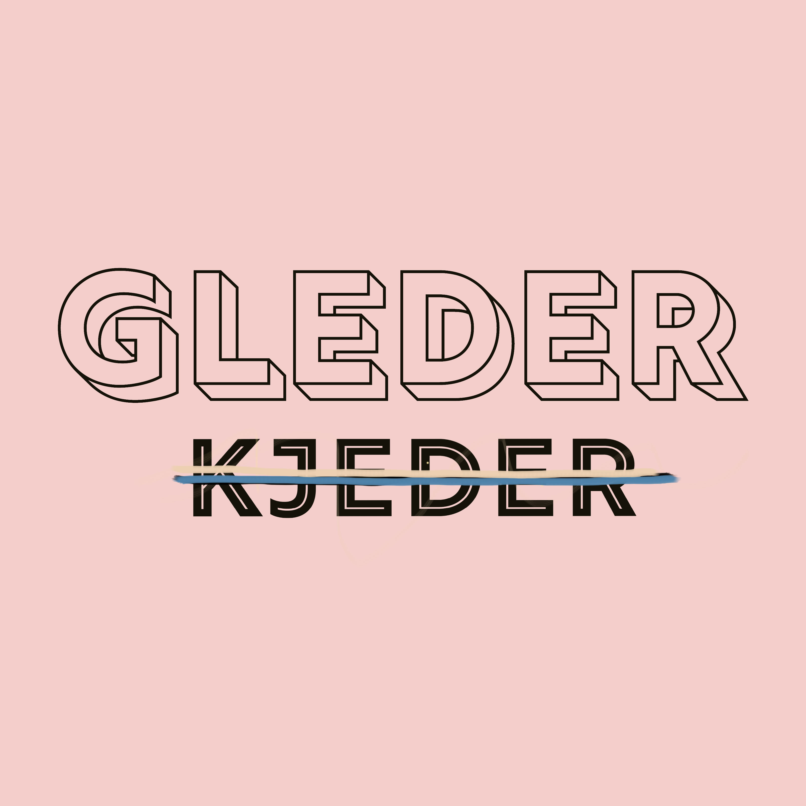
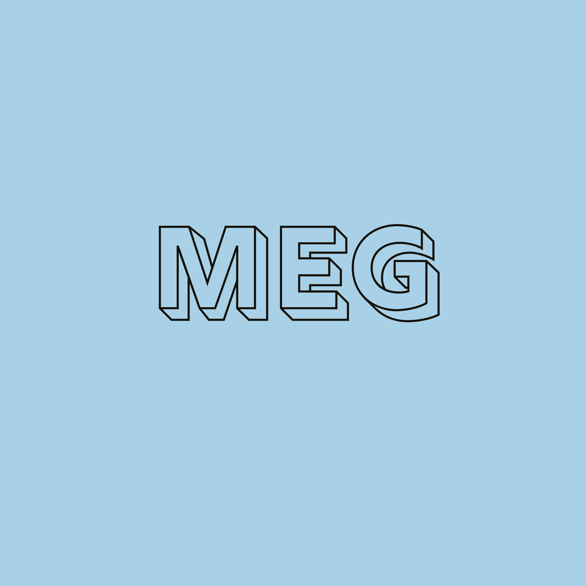
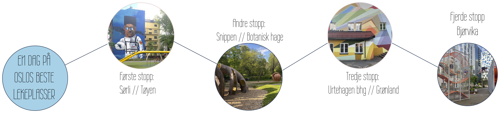

UKENS UTETIPS: TOUR DE LEKEPLASS - FRA TØYEN TIL BJØRVIKA
En tur fra Tøyen til Bjørvika som viser noe av det beste og nyeste Oslo har å by på av lekeplasser, gatekunst og arkitektur

PASSER SPESIELT FOR
alle barn
hvis det er sol
hvis du er i det urbane hjørnet
HØYDEPUNKTER
gatekunsten på Sørli
hengekøyene på Snippen
fontenene i Bjørvika
HUSK
kamera for instabilder
badetøy for å kunne leke i fontenene
UKENS INNETIPS: KLATRING, KUNNSKAP OG KUNST
En dag som byr på bredden i Oslotilbudet- opp i høyden og ut i verden

PASSER SPESIELT FOR
barn 5-12 år
hvis dere har lyst å gjøre mye
hvis dere vil ha påfyll av alt
HØYDEPUNKTER
Nobelsenteret er gratis for barn
fortellinger på afrikansk lekestue
museumsbutikker
HUSK
energi
litt penger
at det er aldri for sent å snu
HVA ANNET SKJER I OSLO DENNE UKEN?
så mye kan vi se
så mye kan vi gjøre
så mye kan vi le
så mye kan vi høre
så langt kan vi sykle
så langt kan vi gå
alt blir veldig fint
når vi har fri
og ingenting må